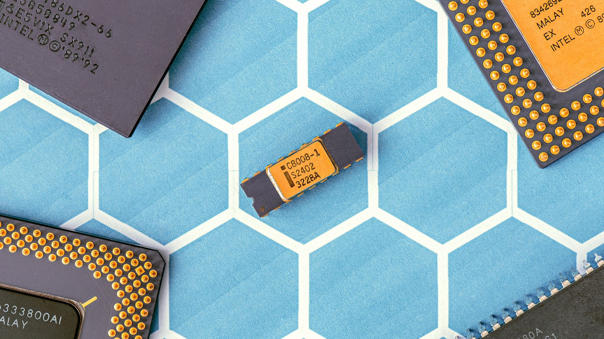

서강대 SoC 설계 전문가 과정 개설…반도체 인력난 정면 돌파

서강대학교 산학협력단(단장 신관우)이 서강 판교 디지털 혁신캠퍼스에서 시스템온칩(SoC) 설계 코어 드라이브 2기 과정을 개설했다. 이 과정은 반도체 설계 실무 인력 부족 문제를 해결하기 위한 산학협력 기반의 집중 훈련 프로그램으로, 국내 팹리스·IP 기업 실무자와 대학원생을 주요 대상으로 한다.
SoC(System on Chip)는 CPU·GPU·메모리·통신 모듈 등 여러 기능을 하나의 칩에 집적한 반도체로, AI 프로세서·스마트폰 AP·자동차 전장 칩 등에 광범위하게 사용된다. 설계 난이도가 높고 전문 인력 수요가 급증하고 있으나, 대학 교육만으로는 현장 적응력을 갖춘 인력 공급이 원활하지 않은 실정이다.
이번 과정은 RTL(Register Transfer Level) 설계부터 물리 구현(Physical Implementation), 검증(Verification), 테이프아웃(Tape-out·설계 완료 후 양산 공정 전달)까지 칩 개발 전 주기를 실습 중심으로 다룬다. 삼성전자·SK하이닉스·퀄컴코리아 출신 현직 엔지니어들이 멘토로 참여해 현장 밀착형 교육을 제공한다.
국내 반도체 설계 인력 부족 현황은 심각한 수준이다. 한국반도체산업협회에 따르면 2025년 기준 국내 반도체 산업의 인력 부족 규모는 약 3만 명에 달하며, 이 중 설계 분야 인력 부족이 전체의 40% 이상을 차지하는 것으로 집계됐다. 특히 AI 가속기·뉴럴프로세싱유닛(NPU) 설계 분야의 인력 수요는 매년 급증하고 있다.
판교 디지털 혁신캠퍼스를 훈련 거점으로 선정한 것도 주목할 만하다. 판교는 카카오·네이버·엔비디아코리아·ARM코리아 등 AI·반도체 관련 기업들이 밀집한 국내 최대 IT 클러스터로, 교육생들이 현장 기업과 즉각적인 네트워킹 기회를 얻을 수 있다는 장점이 있다.
서강대 산학협력단은 이번 2기 과정 수료생을 대상으로 파트너 기업과의 채용 연계 프로그램도 운영할 계획이다. 1기 과정 수료생의 취업 연계율은 약 75%로 알려졌으며, 팹리스 스타트업부터 대기업 설계 센터까지 다양한 규모의 기업들이 채용 의향을 밝힌 상태다.
정부는 반도체 특화 인력 양성을 국가 전략 과제로 추진하고 있다. 교육부와 산업통상자원부는 '반도체 아카데미' 지원 예산을 2026년 기준 전년 대비 30% 확대했으며, 대학 내 반도체 관련 학과 정원 증원과 계약학과 신설을 적극 장려하고 있다. 서강대의 이번 과정은 이러한 정책 기조와 맞닿아 있다.
해외 주요국들도 반도체 설계 인력 확보 경쟁에 박차를 가하고 있다. 미국은 CHIPS법에 인력 양성 예산을 포함시켜 커뮤니티 칼리지부터 대학원까지 반도체 교육 인프라 확충에 나서고 있으며, 대만은 TSMC와 정부가 공동 출자한 '반도체 인재 학교'를 운영 중이다. 한국도 이에 뒤지지 않는 속도로 인력 파이프라인 구축이 필요한 시점이다.
업계 전문가는 '단순한 지식 교육을 넘어 실제 칩을 설계하고 테이프아웃까지 경험하는 프로젝트 기반 학습이 현장 적응력을 획기적으로 높인다'며 '서강대의 이번 프로그램처럼 기업과 대학이 긴밀히 연계된 실무 과정이 더 많이 생겨나야 한다'고 말했다.
SoC 설계 전문 인력 양성은 단순한 인력 공급을 넘어 국내 팹리스 생태계 전반의 경쟁력 향상과 직결된다. 설계 역량이 강화될수록 고부가가치 AI·자동차·방산용 칩 개발이 가능해지며, 이는 소재·장비·파운드리 등 연관 산업 전체의 수요 창출로 이어지는 선순환 구조를 만들어낸다.
서강대 산학협력단 관계자는 '2기 과정의 성과를 바탕으로 연간 상시 운영 체계를 구축하는 것이 목표'라며 '나아가 AI 칩 설계, 첨단 패키징 설계 등 특화 트랙을 추가해 커리큘럼을 고도화할 계획'이라고 밝혔다. 이번 프로그램이 국내 반도체 설계 인력 생태계의 새로운 모델로 자리잡을 수 있을지 관심이 집중된다.